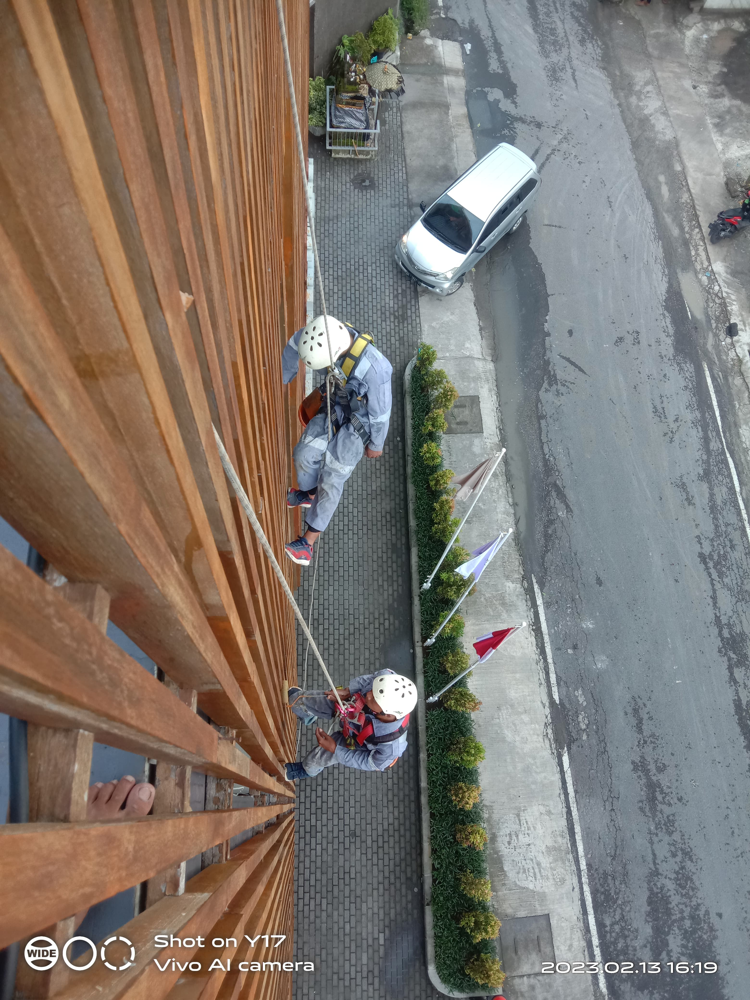

Sistem Layanan
General Cleaning

General cleaning adalah layanan pembersihan menyeluruh yang dilakukan secara berkala untuk menjaga kebersihan, kerapihan, dan kenyamanan suatu bangunan. General cleaning dapat dilakukan di rumah, kantor, kos, atau apartemen.
Deep Cleaning

Deep cleaning adalah proses pembersihan yang lebih menyeluruh dan intensif daripada pembersihan biasa. Deep cleaning dilakukan untuk membersihkan kotoran, debu, dan noda yang sulit terlihat atau tersentuh, serta area yang jarang diakses.
Glass Cleaning

Glass cleaning adalah pekerjaan membersihkan permukaan kaca dari debu, spot tangan, percikan air hujan, dan lain-lain. Kaca merupakan area yang mudah kotor karena sangat sensitif terhadap debu.
Mattras Cleaning

Mattress cleaning atau pembersihan kasur adalah proses untuk membersihkan kasur dari kotoran, noda, dan keringat. Pembersihan kasur yang profesional dapat membantu menjaga kesehatan dan kenyamanan saat tidur.
High Risk Cleaning
High Risk Cleaning adalah pekerjaan pembersihan yang dilakukan di ketinggian dan berisiko, seperti membersihkan jendela gedung tinggi. Pekerjaan ini dilakukan oleh tenaga khusus yang telah tersertifikasi dan menggunakan peralatan khusus.
Polish Lantai

Poles lantai adalah pelapis perawatan yang memberikan kilau dan menutupi goresan mikro pada lantai. Poles lantai dapat dilakukan pada berbagai jenis lantai, seperti keramik, marmer, granit, teraso, dan beton.